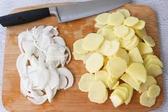
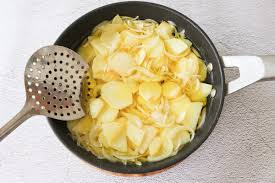
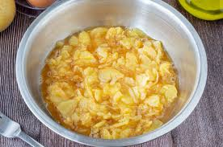
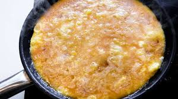
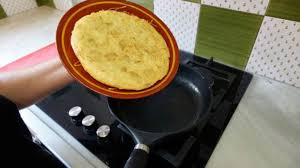

Ingredientes
- 4 patatas
- 1 cebolla (opcional)
- 6 huevos
- Aceite de oliva
- Sal
Pasos
- Corta las patatas y la cebolla en rodajas finas.

- Fríelas en aceite de oliva hasta que estén tiernas.

- Mezcla las patatas y cebolla con los huevos batidos y sal.

- Cocina la mezcla en una sartén hasta que cuaje por un lado.

- Dale la vuelta y cocina el otro lado.
